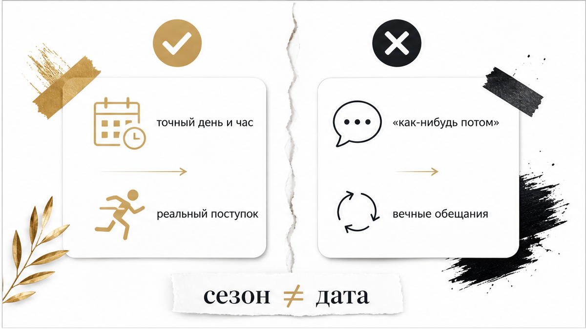
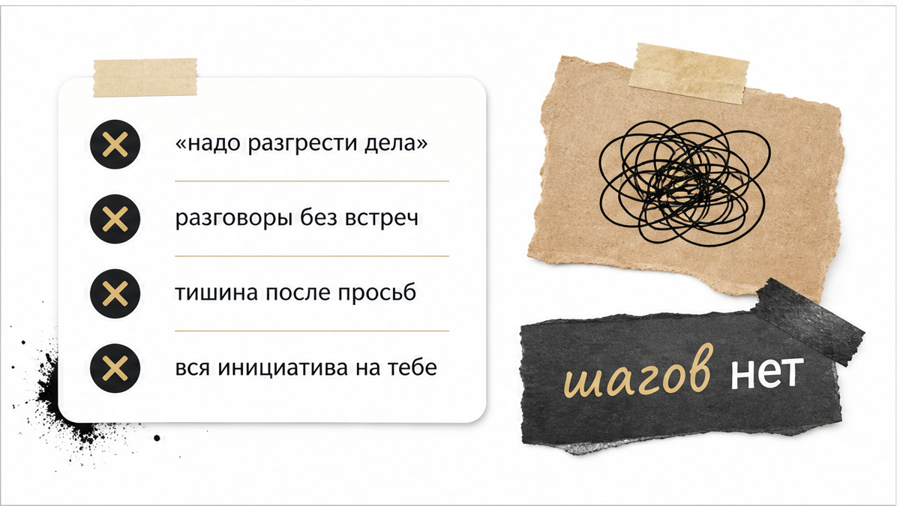
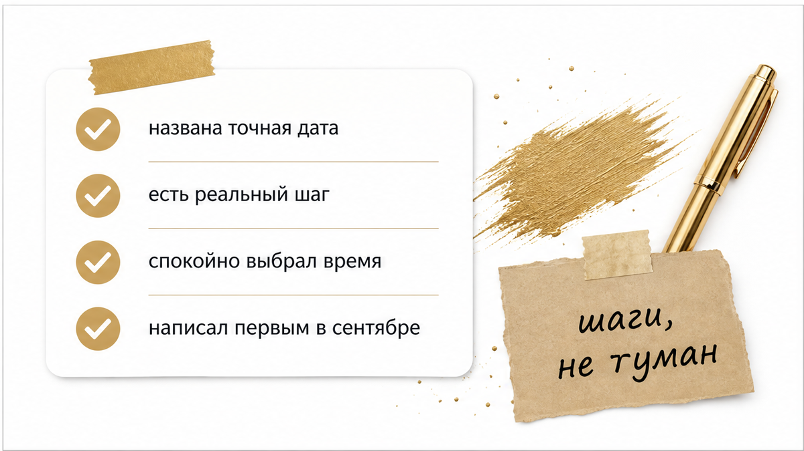

На календаре первое сентября, летние отпуска позади, а в твоей переписке всё так же висит небрежное «давай осенью решим». Все три месяца эта фраза казалась понятной договорённостью: было удобно списать паузу на разъезды, дачи и чужую занятость. Казалось, наступит осень — и неопределённость растворится сама собой, сменившись взрослыми шагами и нормальным разговором. Сентябрь наступил, город вернулся в рабочий ритм, но обещанный разговор так и остался в воздухе — без дня, без времени и без реального движения.
Когда мужчина использует целый сезон вместо конкретного дня, он откладывает не разговор, а необходимость делать выбор. Наступившая осень сразу показывает реальное положение дел: если за сменой сезона не последовало шагов, ожидание просто сжигает твоё время и силы.
Если неопределённость затянулась и тебе нужно понять, что происходит на самом деле, разложи ситуацию на картах:
Сделай 3 бесплатных расклада в боте (выбирай базовый триплет или крест на отношения), чтобы быстро прояснить картину. А если качели длятся месяцами и нужно увидеть весь скрытый сценарий, открой расклад «Суть – Тень – Вектор» с подробным аудиоразбором связок карт в приложении ВКонтакте или запусти приложение в MAX.

Фразы «поговорим после лета», «с осени всё наладим» или «вернёмся к этому в сентябре» звучат солидно. Психика цепляется за них как за твёрдую договорённость: кажется, что у отношений появился понятный срок, до которого можно выдохнуть и не поднимать острых тем.
Ловушка в том, что между настоящим решением и размытым обещанием есть одна критическая деталь — точный день и конкретное действие. Формулировки вроде «в сентябре разгребу завал» создают ощущение скорого финала, но ни к чему не обязывают мужчину. Всё лето служило удобным прикрытием: паузу легко списать на жару, билеты, отпуска и сбитые графики. Календарь перевернулся, и стало очевидно: сезон был просто ширмой, за которой прятали нежелание выбирать.

В первые дни сентября наступает момент истины. Все сроки, которые звучали как «позже» и «с осени», выходят из зоны абстрактных фантазий. Если мужчина действительно ждал осени ради шага навстречу, он называет дату: предлагает встретиться в четверг, сам заводит важный разговор и переходит к делу.
Если же на календаре рабочий сентябрь, а в ответ на любые вопросы всплывают новые отговорки — «дай неделе начаться», «надо как-нибудь выбраться», «чуть позже» — ничего не изменилось. Сезонная развилка уже пройдена. Человек продолжает кормить тебя будущим временем только для того, чтобы не отвечать за происходящее в настоящем.

Когда назначенный срок сгорает, мужчина редко говорит прямое «нет». Гораздо удобнее передвинуть горизонт новыми мягкими фразами.
Вместо понятного плана возникают очередные условия: «разгребу завал по проектам», «на этой неделе точно пересечёмся», «чуть позже всё решим». Это затягивает в привычку бесконечного ожидания там, где движения нет месяцами. Каждое такое обещание звучит весомо, но оставляет тебя в подвешенном состоянии. Если число разговоров о встречах давно превысило количество самих встреч, дело не в плотном графике, а в нежелании сближаться.
Главный ориентир в отношениях — то, что происходит в первые дни после разговора. Слова могут звучать тепло, участливо и многообещающе, но реальный вектор виден только в действиях.
Если после каждого намёка на совместное будущее наступает привычная тишина на несколько дней, а инициатива снова держится только на тебе — это и есть его позиция. Бесконечный круг душевных бесед без единого поступка — не поиск подходящего момента, а удобный формат, в котором ему комфортно ничего не менять. Перестать оправдывать его календарём и взглянуть на сухие факты — первый шаг к тому, чтобы вернуть себе опору и ясность.
Чтобы перестать жить в режиме ожидания и трезво оценить слова мужчины, пропусти последние разговоры через пять простых фильтров:
Определённость начинается не тогда, когда мужчина созреет для идеального момента, а когда ты перестаёшь соглашаться на вечные переносы сроков. Карты помогают увидеть реальную подоплёку его поведения, снять изматывающее напряжение и понять, куда движется этот союз.
Верни себе ясность и спокойствие: